🎨 Edit-Mode aktiv — Panels ziehen, Position wird gespeichert
…Fossil— Pkt.
📈Grow-Boost--:--
Verbinde…
—
🔊 Reichweite: 10 m
Zone: —
📍 Teleport-Punkte
Keine Punkte.

📐 Zonen verwalten
Typ wählen → Neue Zone → im Spiel die Form abfliegen → an jeder Ecke F6 drücken.
Reihenfolge = Umrandung. Dann für alle speichern.
Keine Zone gewählt
🔧 Kalibrierung
Am besten deine eigene Position an 3-4 weit entfernten Orten:
hinstellen → 👤 dich wählen → auf der Karte dort klicken. Punkte weit verteilen,
keine Zonen-Ecken (liegen zu dicht).
Macht dein eigenes Mikro für alle anderen lauter oder leiser (100 % = normal).
🎚️ Erweiterte Audio-Einstellungen
Bearbeitet dein gesendetes Mikro (Reihenfolge: Rauschunterdrückung → Low-Cut → Gate → Kompressor → Limiter). Wirkt für alle anderen.
Browser-Rauschminderung (Lüfter, Tastatur, Grundrauschen) direkt am Mikro.
Grenzfrequenz
Schneidet tiefes Brummen/Rumpeln unterhalb dieser Frequenz weg (macht die Stimme klarer).
Schwelle (Threshold)
Ab welchem Pegel das Mikro öffnet. Höher = strenger (schneidet mehr weg).
Attack
Wie schnell das Gate öffnet, wenn du sprichst.
Release
Wie schnell es wieder schließt, wenn du still bist.
Hold
Hält das Gate nach dem letzten Ton offen (verhindert Zerhacken in Sprechpausen).
Vorverstärkung
Signal anheben, bevor der Kompressor greift. Negative Werte senken.
Schwelle (Threshold)
Ab welchem Pegel er eingreift. Je niedriger, desto mehr Kompression.
Ratio
Kompressionsverhältnis. Höher = stärkere Begrenzung. 1:1 = aus.
Attack
Wie schnell er zuschlägt. Niedrig = schneller.
Release
Wie schnell er loslässt. Höher = weicher.
Knee
Sanfter Übergang am Threshold. Höher = weicherer Einsatz.
Obergrenze (Ceiling)
Harte Decke gegen Übersteuern/Clipping bei lauten Spitzen (Schreien).
⚙️ Voicechat-Einstellungen
🎤 Mikrofon (Eingabe)
🔈 Ausgabegerät
🔊 Deine Sprechreichweite (andere hören dich so weit)
🎚️ Lautstärke pro Spieler (nur für dich)
🔊 Alle Spieler100%
🧭 3D-Stärke100%
⌨️ Tastenbelegung
🎨 Farbthema
⚡ Low-Spec / Performance
⚡ Low-Spec-ModusWeichzeichner + alle Effekte auf einmal aus — für schwächere PCs / mehr FPS.
Einzeln einstellen
🌫️ Weichzeichner
⚡ Effekte
🌫️ Weichzeichner (Blur) = größter FPS-Kostenpunkt. ⚡ Effekte = Animationen/Leuchten. Beim Spielen (Overlay-Dock zu) sind viele Effekte ohnehin automatisch aus.
Experimentell
🪟 Fenster-Shrink
🪟 Verkleinert das Overlay-Fenster beim Spielen (Dock zu) auf die HUD-Bereiche, statt den ganzen Bildschirm zu bedecken — gibt dem Spiel oft den schnellen Vollbild-Pfad zurück (mehr FPS). Wirkung ist GPU-/treiberabhängig: ausprobieren. Weniger sichtbares HUD (im Edit-Mode ausblenden) = stärkerer Effekt.
👁️ HUD-Sichtbarkeit
🗺️ Karten-Marker
🚩 Wegpunkt-Farbe
🚩 Wegpunkt-Größe
📍 Spieler-Pfeil-Farbe
Farbe & Größe des Wegpunkts sowie die Farbe deines eigenen Positions-Pfeils. Bleibt gespeichert.
🎨 Layout
Panels per Drag verschieben — Positionen werden lokal gespeichert.
ℹ️ Version
Installierte Version…
Eine neue Version ist verfügbar.
👤 Sitzung
📝 Letzte Änderungen
Lade Release-Notes…
🖥️ Admin — Owner & Admins
Lade…
Lade…
Lade…
Lade…
🔧 Karten-Kalibrierung
📍 Teleport-Punkte
TP-Punkt an aktueller Position
Lade…
🚦 Status-Matrix
Lade…
👥 Spieler (24 h)
🏷️ Versionen & Branches
Lade…
📜 Logs
📣 Gottstimme — server-weite Durchsage
Während der Durchsage hören dich ALLE Online-Spieler voll „von oben" mit leichtem Verzerr-Effekt; alle anderen Stimmen werden abgesenkt. Erneut klicken = aus. Du musst im Voice verbunden und lebend sein.
Lade…
🖥️ Server — Steuerung & Live-Status
Lade Status…
📢 Ansage (ingame)
👥 Spieler online (–)
🦖 Class-Limits
🧹 Wartung
⚙️ Server-Steuerung (gefährlich)
Stop/Restart trennt ALLE Spieler!
🛡️ Team — Moderatoren & Supporter
Dienst-Modus
Als Moderator/Supporter musst du den Dienst-Modus einschalten, um die Werkzeuge zu nutzen. Friert deine Vitals ein (kein Verhungern) und legt den Admin-Skin an. Erneut klicken = aus. Du musst lebend auf einem Dino sein.
👤 Spieler-Verwaltung
Discord-User suchen
💬 Nachricht an Spieler (Toast)
Wird dem Spieler im Overlay als Toast angezeigt (beim nächsten Update, wenn er online ist).
🎯 Spieler verfolgen (Follow)
Dein Admin-Pawn (Fly-Mode) folgt dem Spieler ~50 m von oben. Im Fly-Mode sein, dann starten.
🎁 Beschenken
Ziel
User
Rolle
Was
Menge
Lade…
Lade…
Lade…
Lade…
Lade…
📢 Server-Ansage (ingame)
Sendet eine Nachricht an ALLE Spieler auf dem Server (z. B. Event-Hinweis, Restart-Warnung).
⚠️ Nicht auf dem BlackFossil-Server — verbinde dich im Spiel, um Karte & Proximity zu nutzen.
⬆️ Update verfügbar
🔴 Du bist NICHT im Voice-Chat — klicken zum Verbinden
…
🔔 Postfach
Verpasste Benachrichtigungen — Belohnungen, Hinweise & mehr. Neue Meldungen erscheinen auch als Toast.
🎨 Skin Editor
Wird in Kürze verfügbar sein.
🚗 Garage
Ein- und Ausparken deiner Dinos — kommt in Phase 4.
🦖 Dino-Markt
Dinos kaufen & verkaufen — kommt in Phase 4.
🐛 Bug melden
Beschreibe kurz, was schiefläuft. Ein Screenshot hilft uns enorm.